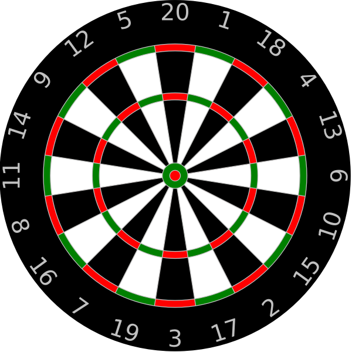

Darts • scores • analytics
THEOCHE➤LIVE
Live tracking today's dart matches, tournaments, odds, and champions 🎯
WORLD GRAND PRIXROUND OF 16LEICESTER

On the oche
Today's Matches
Live Upcoming Final
From the PDC
Latest Darts News
PDC NEWSROOM
World Grand Prix updates
Official reports, player reaction, draws and breaking PDC stories.
READ LATEST →TOURNAMENTFollow Leicester
Keep up with the double-start event as the field moves through the knockout rounds.
VIEW COVERAGE →AROUND THE PDCRankings, ProTour & players
The newest official stories from across the professional circuit.
MORE STORIES →